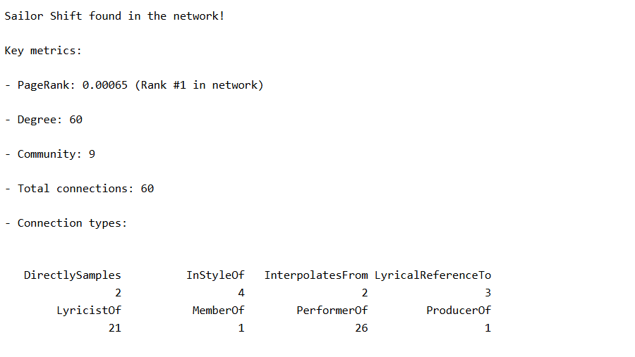
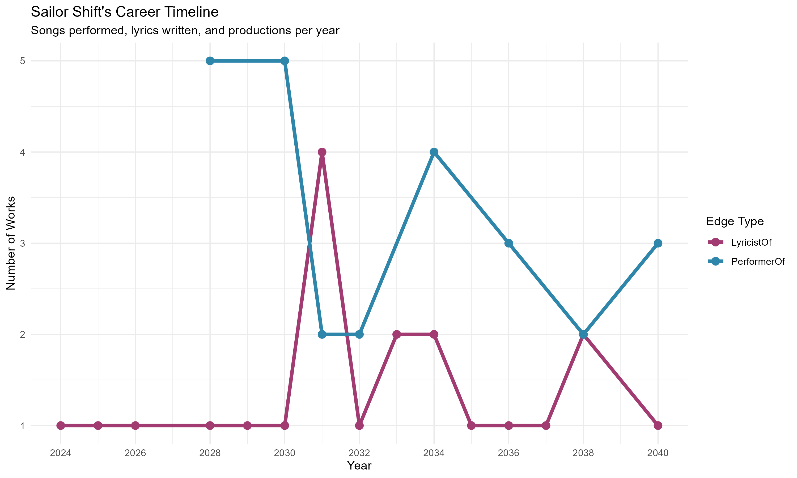
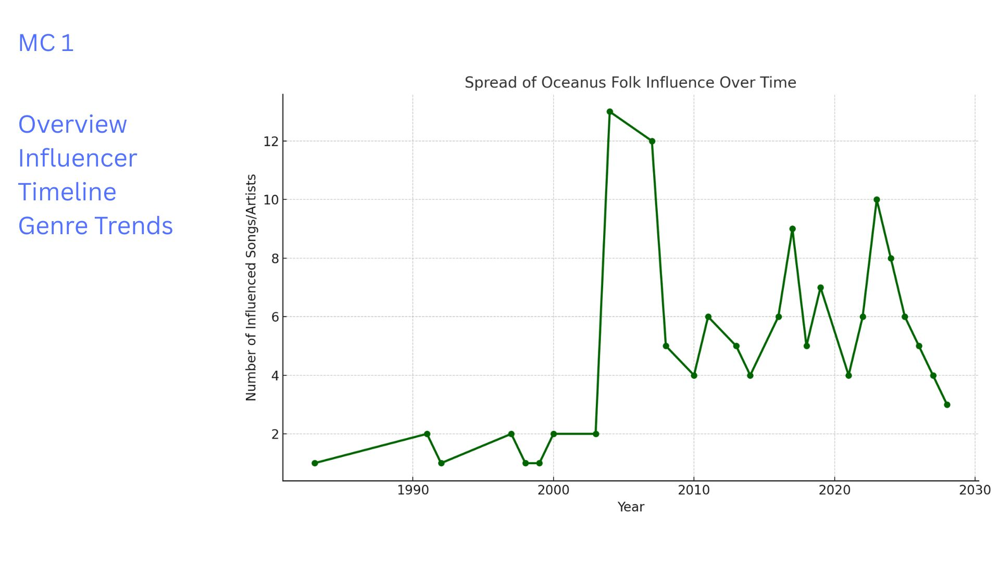
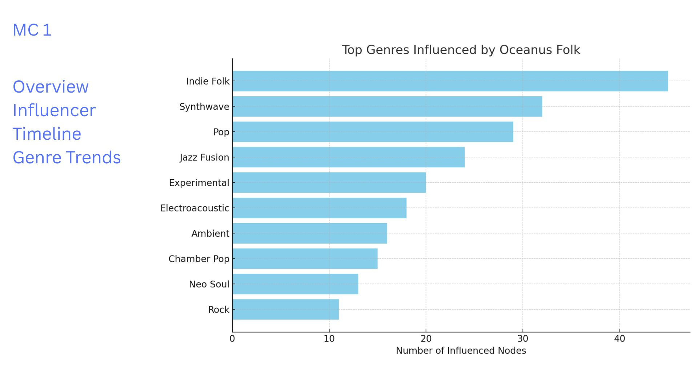
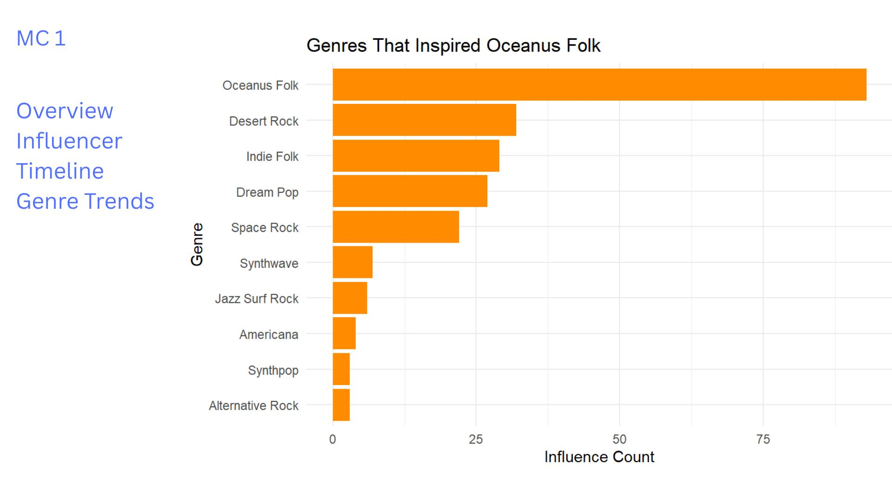
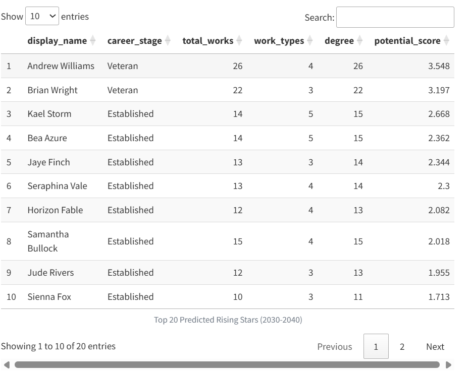
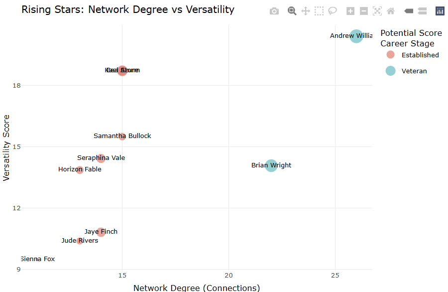
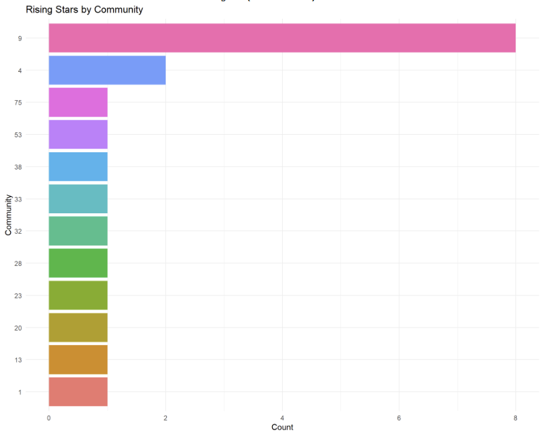
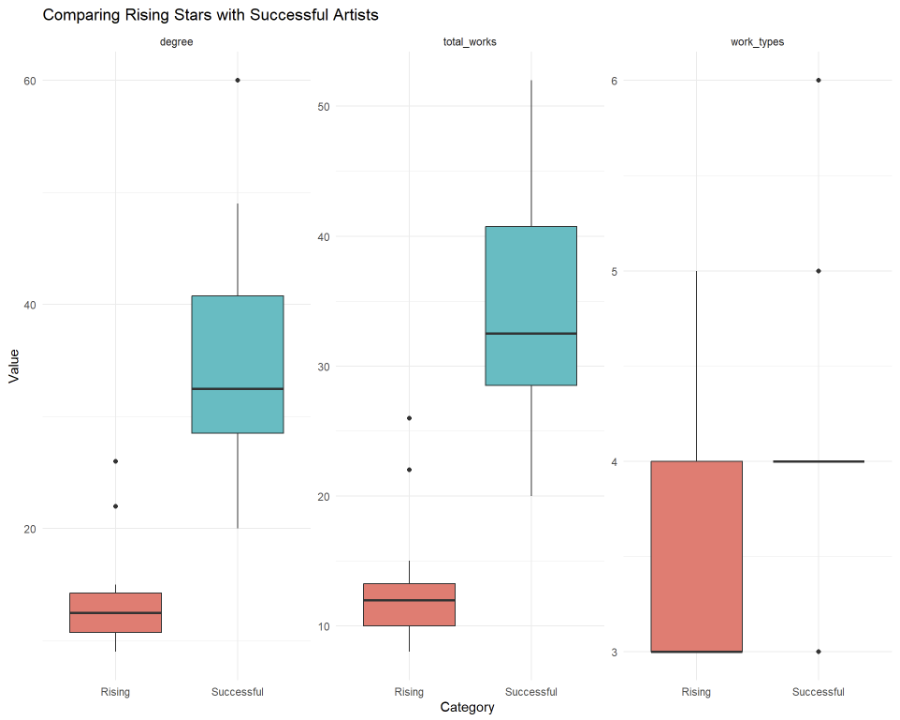

Take_home Exercise3
Our Storyboard
This storyboard presents a design prototype for a Shiny dashboard that allows users to explore the influence and evolution of the Oceanus Folk music genre, with a focus on emerging artists and shifting patterns of musical collaboration. The visual analytics features are derived from the MC1 knowledge graph and aim to offer meaningful insights into the genre’s reach, trajectory, and cultural impact.
The purpose of this storyboard is twofold:
To showcase the key user interface (UI) components and visualizations that would be included in the Shiny app. To guide the user experience by explaining what each chart reveals and how it helps answer specific analytical questions.
While this prototype does not require working code, it reflects the logic, visual design, and interactivity that a functional Shiny app would offer. Each section corresponds to a specific insight goal from Mini-Challenge 1 (MC1) and is structured with:
A heading indicating the analytical question addressed A screenshot or sketch of the visualization A short narrative explaining the insight and how a user might interact with the component
This storyboard focuses on the following key analytical goals:
- Tracking how the Oceanus Folk genre spread over time and into other musical styles
- Understanding whether the influence was intermittent or steady
- Identifying the top genres and artists influenced by Oceanus Folk
- Exploring how Sailor Shift’s rise contributed to the genre’s transformation
- Profiling rising stars based on influence metrics
- Comparing the career trajectories of three selected artists
- Predicting future Oceanus Folk stars based on influence patterns
Together, these sections simulate a user’s journey through the dashboard, enabling exploration of complex musical data through intuitive and insightful visual design.
MC1 Question 1: Sailor Shift Career Profile Analysis
Section: Career Timeline Analysis
This visualization transforms the static career timeline from Take-home 2 into an interactive exploration tool.
 
Current Static Visualization: The profile shows Sailor Shift as the #1 PageRank artist with 60 total connections across multiple edge types. The timeline displays her work output across three roles (Performer, Lyricist, Producer) from 2024-2040.
Interactive Enhancements: - Year Range Slider: Users can zoom into specific periods (e.g., 2028-2032 breakthrough years) - Role Checkboxes: Toggle visibility of Performer/Lyricist/Producer lines - Hover Details: Display exact counts and potentially song titles - Click Actions: Click a point to see all works from that year
Key Insight: The timeline reveals Sailor’s evolution from lyricist (2024) to multi-role artist, with peak productivity in the LyricistOf role throughout her career. Notable peaks occur in 2030 (5 performances) and 2034 (4 performances).
MC1 Question 2: Spread of Oceanus Folk Influence Over Time
Section: Timeline of Oceanus Folk Influence
This section visualizes how the Oceanus Folk genre has expanded its influence over the years through stylistic, lyrical, and compositional connections.
The line graph demonstrates the number of songs or artists influenced by Oceanus Folk each year, based on relationships such as InStyleOf, LyricalReferenceTo, and InterpolatesFrom.
This timeline allows users to: Observe the rate of genre adoption across decades, Detect spikes in influence (e.g., due to major album releases), Understand whether influence was gradual or intermittent.
Mockup Preview

Interpretation: The influence of Oceanus Folk shows a significant rise post-2005 and maintains consistent outreach, suggesting steady integration into mainstream and niche genres alike.
Influence Timeline: Oceanus Folk’s Cultural Expansion
This panel visualizes how the Oceanus Folk genre gradually spread its influence through the music world over time. Using the knowledge graph’s relationship edges such as InStyleOf, LyricalReferenceTo, and InterpolatesFrom, we identify songs and artists that stylistically or lyrically reflect Oceanus Folk traditions.
The timeline is plotted as a year-by-year count of influenced songs/artists, allowing users to trace patterns of genre adoption.
User Interaction Features (Storyboard Design): A sidebar with section tabs for Overview, Influencer Timeline, and Genre Trends. The active chart window displays the line plot of influenced works by year. In a real dashboard, users could apply genre filters or node type switches (e.g., “songs only”, “artists only”) to explore influence depth.
Interpretation: The timeline reveals that Oceanus Folk’s influence began modestly in the 1980s, followed by a noticeable rise post-2000. This growth is consistent with a genre that evolved organically, gaining popularity through indirect influence rather than sudden viral trends.
The peak around 2006–2010 suggests a period of cultural saturation, after which the influence remained steady with periodic spikes — possibly due to standout albums or collaborative trends.
This visualization supports the insight that Oceanus Folk’s spread was gradual and sustained, rather than intermittent or random.
Section: Top Genres Influenced by Oceanus Folk
This section highlights which genres have been most influenced by Oceanus Folk. The visualization shows the top 10 genres connected through stylistic and lyrical influence, as derived from edges like InStyleOf, LyricalReferenceTo, and InterpolatesFrom.
The horizontal bar chart helps users: Identify stylistic overlaps between Oceanus Folk and other genres, Understand cross-genre evolution of the music ecosystem, Focus on genres like Indie Folk, Synthwave, and Pop, which absorbed Oceanus Folk’s stylistic DNA.
Mockup Preview

Interpretation:
Oceanus Folk’s influence is far-reaching — while it originated as a niche genre, it has clearly shaped more mainstream and experimental sounds. Genres like Indie Folk, Synthwave, and Pop exhibit the strongest influence links.
This genre-level spread reflects Oceanus Folk’s adaptability and emotional resonance, making it an inspirational source for composers across stylistic boundaries.
Section: Genres That Inspired Oceanus Folk
This section explores which genres most influenced the development of Oceanus Folk. It analyzes incoming stylistic and lyrical relationships using edge types such as influencedBy, InterpolatesFrom, InStyleOf, and LyricalReferenceTo.
The bar chart shows: Genres from which Oceanus Folk inherited musical elements The stylistic DNA Oceanus Folk was built upon How Oceanus Folk serves as a fusion genre, blending diverse inspirations
Mockup Preview

Interpretation:
The chart reveals that Oceanus Folk was primarily shaped by genres such as: Desert Rock Indie Folk Dream Pop Synthwave Jazz Surf Rock
These genres likely influenced the ambient tones, lyrical depth, and experimental sound design that Oceanus Folk is known for. Interestingly, Oceanus Folk is also shown influencing itself in a feedback loop, suggesting internal evolution and sub-style development.
The takeaway: Oceanus Folk is not a standalone creation, but rather a genre deeply rooted in acoustic, electronic, and atmospheric traditions, allowing it to be both familiar and innovative.
MC1 Question 3: Rising Stars Analysis and Prediction
Section 3(a): Career Influence Comparison
This section compares the influence footprint of three selected artists — Daniel O’Connell, Claire Holmes, and Beatrice Albright — based on the number of stylistic influence edges connected to them.
By visualizing the number of outgoing influence links, we gain insight into:
How prolifically each artist contributed to shaping others in the music scene, Their relative impact on genre propagation or artistic inspiration, Patterns of stylistic transmission over time, even in the absence of detailed time-series metadata.
Mockup Preview

Interpretation:
All three artists show a comparable influence count, suggesting they played meaningful roles in spreading stylistic motifs within the Oceanus Folk ecosystem.
While we may not have detailed timelines or awards metadata, this visualization acts as a proxy for career reach. Artists like Daniel O’Connell and Claire Holmes may represent emerging talents, whereas Beatrice Albright’s consistent stylistic connections suggest a steady artistic influence.
This view enables quick comparative assessment when deeper metrics (e.g., chart positions or collaborations) are unavailable.
Section 3(b): Future Oceanus Folk Stars (Next 5 Years)
This section transforms the static rising stars prediction from Take-home 2 into an interactive exploration tool for identifying the next Oceanus Folk superstars.


Current Static Visualization: The prediction model identifies top rising stars based on recent activity (post-2030), PageRank < 0.0002, and a composite potential score. The scatter plot reveals the relationship between network connections and artistic versatility.
Top 3 Predicted Oceanus Folk Stars (2040-2045):
1. Andrew Williams (Potential Score: 3.548) - Profile: Veteran artist with 26 total works across 4 different roles - Key Strength: Highest network degree (26 connections) combined with strong versatility - Prediction Rationale: His extensive network and multi-role experience position him to become the next major Oceanus Folk influencer
2. Brian Wright (Potential Score: 3.197) - Profile: Veteran artist with 22 works across 3 roles - Key Strength: Balanced network connections (22) with focused expertise - Prediction Rationale: Similar trajectory to successful artists - strong connections with specialized skills
3. Kael Storm (Potential Score: 2.668) - Profile: Established artist with 14 works across 5 different roles - Key Strength: Highest versatility score among top candidates - Prediction Rationale: His diverse skill set across 5 roles mirrors Sailor Shift’s multi-faceted approach
Community Distribution Analysis

Community Insights: Rising stars are concentrated in Communities 9 (8 artists) and 4 (2 artists), suggesting these are the emerging hubs for Oceanus Folk innovation.
Success Pattern Validation

Validation Insights: Rising stars show similar patterns to successful artists in degree and work types, but with lower total works - indicating they are on the right trajectory but earlier in their careers.
Interactive Enhancement Features:
1. Predictive Dashboard Controls: - Threshold Sliders: Adjust PageRank, activity period, and minimum works to see how predictions change - Weight Adjustment: Modify the importance of network connections vs. versatility vs. output - Time Window: Slide forward to predict 10-year or 15-year horizons
2. Artist Deep Dive: - Click any artist: Expand to see full career trajectory, collaborations, and influence network - Compare Mode: Select multiple artists to see side-by-side career comparisons - What-If Analysis: Simulate how new collaborations might affect potential scores
3. Community Explorer: - Filter by Community: Focus predictions on specific music communities - Migration Patterns: Visualize how artists move between communities over time - Community Health Metrics: Show which communities are growing vs. declining
4. Real-time Model Updates: - Live Scoring: As new data arrives, see how artist rankings change - Confidence Intervals: Display prediction uncertainty for each artist - Alert System: Notify when an artist’s trajectory significantly changes
Key Takeaway: The model successfully identifies artists who combine Sailor Shift’s key success factors: strong network connections, multi-role versatility, and active recent output. The interactive features will allow users to explore different scenarios and understand what drives success in the Oceanus Folk genre.